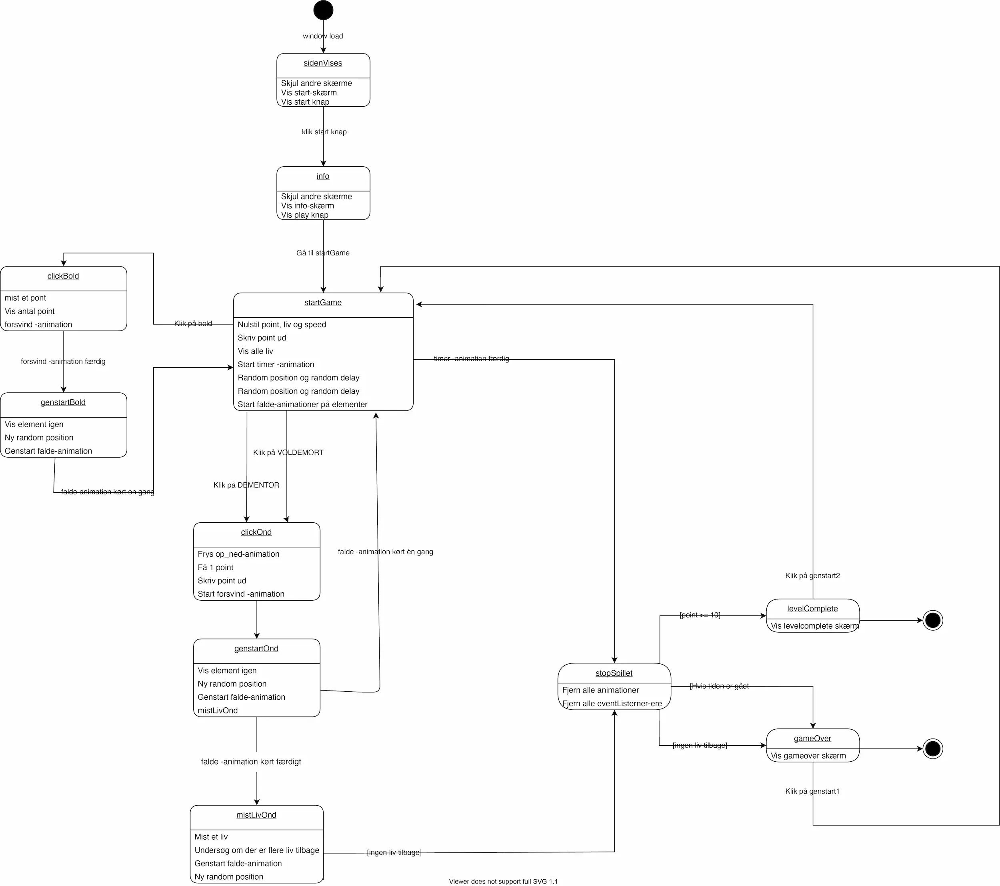
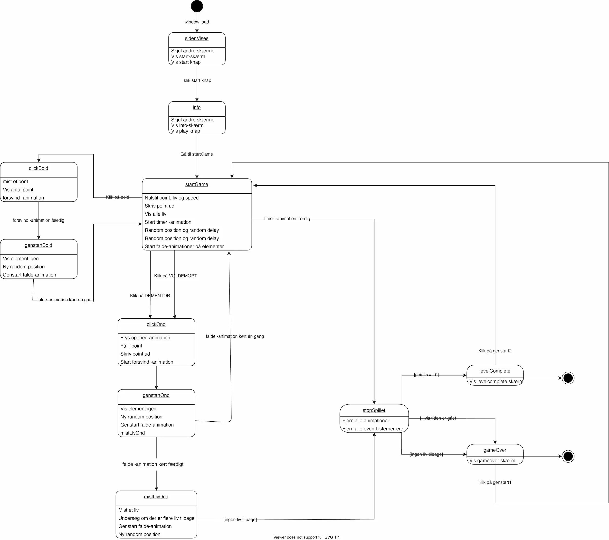

04.05.03 Temaopgave
På dette tema skulle vi designe samt kode vores eget spil med udgangspunkt i selvvalgt stilart samt emne. Spillet skulle være interaktivt animeret, hvoraf jeg særligt fik arbejdet med implementering af javascript. Jeg valgte at lave et fall-down spil, hvor al grafik blev lavet og designet i Adobe Illustrator.
Se min opgave herFASE 1 - Ide og design
Selve ideen til spillet udsprang af min store interesse for Harry Potter. Jeg har altid elsket Harry Potter universet og tænkte derfor det kunne være sjovt, at tage udgangpunkt i noget som fangede en interesse.
Hele spillet er derfor bygget op omkring Quiditch, som er det spil der spilles i Harry Potter, hvor de 4 huse dyster mod hinanden. Det er også derfra jeg har fået instiration til navnet "Clickitch" hvor jeg har kombineret det oprindelige navn med opgaveformuleringen, da vi skulle udarbejde et click-spil.
Mit udgangspunkt for stilarten udspringer af selve inspirationskilden som er hele Harry Potter universet. Jeg ønskede ikke at skabe en realistisk og detaljefyldt sammenhæng, men ville hellere ramme et mere et sjovt og faldt design, hvor elementer stadig kunne skabe stor genkendelighed. Jeg blev inspireret til at gå denne vej, efter at have kigget lidt på "temaet/designet" som de bl.a. anvender i Power Puff pigerne. Karaktererne har lidt babybias iform af store hoveder, men udtryk og gode samt onde karaktertræk kan stadig komme til udtryk.
I den kreative ide fase har jeg særligt tilegnet mig viden om skitseringsteknikker,ide-genereringsteknikker, iterationer og den kreative ideudvikling bl.a. gennem paperprototypes.
FASE 2 - Koncept
Konceptet bag mit spil er lavet på baggrund af et aktivitetsdiagram og et statemachinediagram, som har været med til at skabe overblik samt struktur gennem min implementeringsproces.
Konceptet for spillet gik ud på at man skulle hjælpe Harry med at vinde Clickitch samt forhindre de onde kræfter i at ramme ham. Hvis Harry blev ramt af de onde kræfter, mistede man liv og omvendt hvis man nåede at "klikke" dem væk fik man point. Man måtte ikke "klikk" boldene væk, da han jo skal bruge dem for at kunne vinde Clickitch. "Klikkede" man boldene væk, ville man derfor på minus point.
 

FASE 3 - Implementering
Den sidste fase i udviklingen af mit spil var implementeringsfasen. Her anvendte jeg javascript sammen med CSS, hvor jeg bl.a. lærte at lave animationer i CSS ved hjælp af keyframes. For at gøre animationerne interaktive, benyttede jeg javascript, hvor jeg lærte hvordan man henholdvis gjorde elementer klikbare, tilføje samt fjerne classer og loade siden. Jeg lærte ligeledes om konstanter samt dets nyttige funktioner og hvordan jeg implementerede det i mit eget spil.
Afslutningsvis på dette tema udarbejdede jeg et survey med henblik på at få information samt feedback på brugeroplevelsen af mit spil.